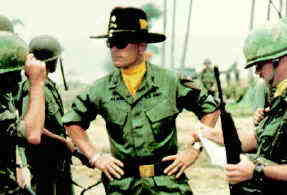

DVD Review Archive
Feature Archive Back Issues Links DVD MIA DVD
Alerts Movie Posters Laser Site Info Home E-mail
© 2002 Films on Disc Stuart J. Kobak ALL RIGHTS RESERVED.
|
|
Laser Disc ReviewApocalypse Now/A-,A-US/1979/Color/Widescreen 2.05:1/Stereo Surround/155 minutes/Directed by Francis Ford Coppola/Starring Martin Sheen, Marlon Brando/Paramount/19 Chaps/CLV/$44.95 The complex tapestry of overlapping dissolves that opens Apocalypse Now lays out the major theme of the film as the music blares out Jim Morrison's lament "All the children are insane," for this film is clearly a depiction of the insanity and absurdity of war reflected in the hyperbolic images of director Francis Ford Coppola. The absolute absurdity of Coppola's war is best highlighted in three or four major scenes. When the patrol boat taking Willard into the proverbial "heart of darkness" is journeying deep into the heart of Vietnam, the music pounds out "I can't get no satisfaction," from the Rolling Stone song, and as Willard watches young Mr. Clean (Lawrence Fishburne only 14 at the time) dancing to the music, the height of absurdity is reached only to be toppled from the pinnacle moments later by the image of Lance, the surfer, water-skiing behind the boat and jovially waiving to the natives on the shoreline. As the boat speeds through the water, Lance in tow, two working Vietnamese in a boat are overturned by the wake of the American boat, and so it is that Coppola finds a perfect visual metaphor for the plight of the Vietnamese, fallen in the wake of the insensitive American onslaught. Later, under the direction of wild Colonel Kilgore, there's a surfing session in between the bomb blasts on the beach which likewise embellishes the Coppola vision of absurdity at its greatest extremes. But it is the image at the Cambodian border, a no man's land of hell, that comes closest to defining the insanity that the director is searching for, along with Willard, on this journey down the Nung River to the end of civilized war, if that can exist in any form. Coppola's vision of the Vietnam war is deliberately bombastic. Every step further into the jungle shakes the ground and the soundtrack. The director's vision encompasses the idea of the war and the enormity of its overall impact without paying heed to the details of the individual reality of the war. In Platoon, Oliver Stone paints his portrait of the Vietnam war in the most intuitive terms. Both films use a narrator to describe much of what they are seeing or feeling, but Willard is an impersonal observer, a small cog used as a device to illuminate the big picture. Taylor, on the other hand, in Platoon, explores the raw insides of the individual experience of war. Was it ironic that seven years after Apocalypse used Martin Sheen as its narrator, Platoon used his son, Charlie Sheen as its narrator. Coppola composes the most startling pictures of war in the first depiction of the 1st of the 9th Air Cavalry Division attacking a beachhead. The visual imagery, captured in still frame, is a classic depiction of war that easily could be reproduced as a stamp in memory of the horror of the Vietnam war. Vittorio Storaro brings amazing grace to the camera work for Apocalypse Now. The cinematographer and director create one master image after the next in a magnificent visual compilation. Martin Sheen does an outstanding job as Willard, but his is mostly passive observer. Robert Duvall has the plum acting role in the film. His Colonel Kilgore epitomizes the madness and the recklessness of the war. The Air Cav commander, a surfing maniac, will go to any length to find the best of Vietnam's surf. When advised that the beachhead at which Willard wants to land has a magnificent six point wave,  Kilgore, despite prior reservations about the danger, determines to land there. When he is reminded of the danger and that this beach is "Charlie's" point and it pretty hairy there, Kilgore belligerently barks, "Charlie don't surf." Coupled with his later line, "I love the smell of napalm in the morning," these comments make an unforgettable pair of bookends to this tale of the madness of war.The laser disc has been transferred under the supervision of the director of photography, Storaro, and the result an accurate recreation of the image of the director and his camera collaborator. Thought the image is sometimes grainy, it is true. The colors achieve a proper balance and the darkest scenes are reasonably lit. The laser disc is greatest in its use of sound, which aggressively moves sound around the room. The base decibels of the air cavalry attacks are a challenge to any sound system and if your system is not up to it, better get ready to pause the film and adjust the sound. |